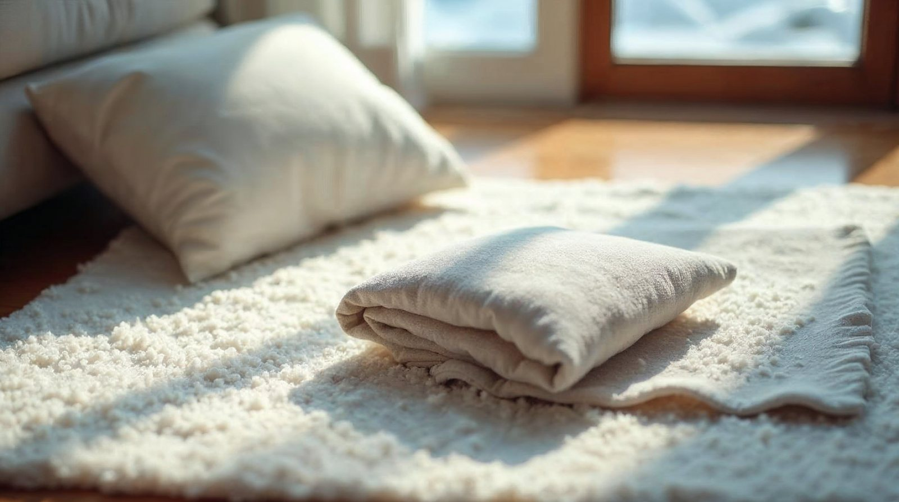
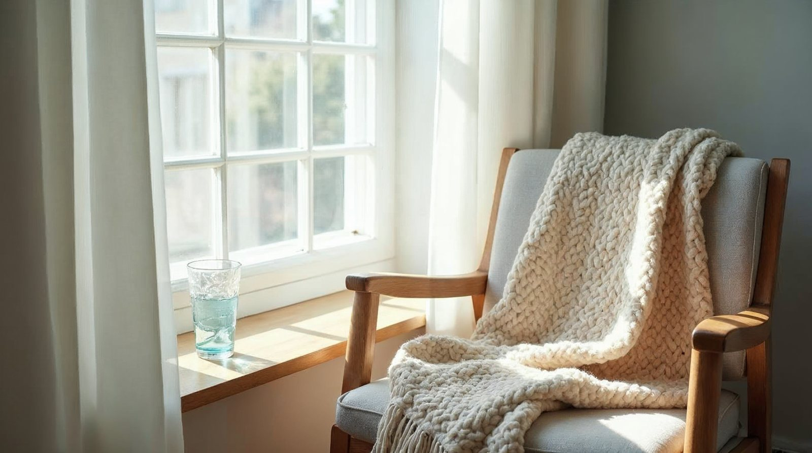
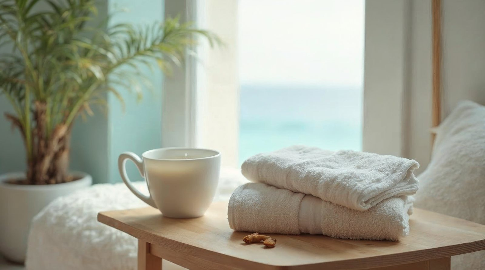
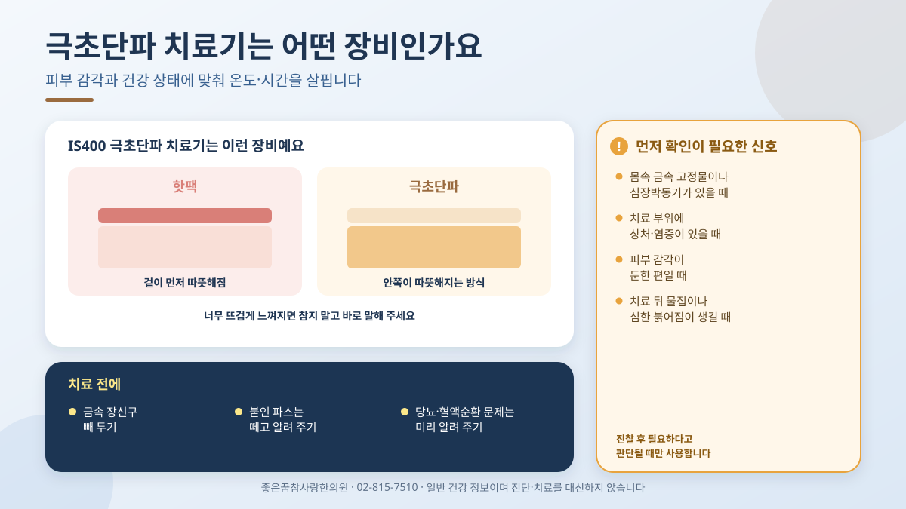

이종호 한의사 감수좋은꿈참사랑한의원 대표원장 (한의사 면허번호 19769)발행 2026-11-23 · 수정 2026-11-25
이 글의 차례
퇴근길 버스에서 내려 집까지 걷는 동안 어깨가 돌덩이처럼 무겁습니다. 집에 오자마자 찜질팩을 데워 어깨에 얹어 보지만 겉만 뜨겁고 속은 그대로인 것 같습니다. 그러다 한의원에서 극초단파 치료기라는 말을 들으면 이름부터 낯설어 망설여지기도 하지요.
극초단파 치료기는 극초단파를 이용해 치료 부위를 안쪽까지 따뜻하게 하는 온열 장비이고, 좋은꿈참사랑한의원에서는 IS400 극초단파 치료기를 진찰 후 필요하다고 판단될 때만 씁니다. 몸속 금속이나 전자 의료기기가 있는 부위에는 쓰지 않으며, 피부 감각과 그날의 몸 상태를 먼저 확인한 뒤 온도와 시간을 맞춥니다.
진료실에서 이런 질문을 자주 받습니다. 이름이 낯선데 몸에 괜찮은 거냐고, 핫팩이랑 뭐가 다르냐고요. 몸이 아파 오셨는데 낯선 기계 앞에 누워야 하니 불안한 게 당연합니다. 아픈 데다 걱정까지 하나 더 얹어 드리고 싶지 않아서, 저는 장비를 쓰기 전에 무엇을 하는 장비인지, 왜 이것저것 여쭙는지부터 말씀드리려 합니다.
이 글에는 극초단파 치료기가 집에서 쓰는 찜질 도구와 어떻게 다른지, 왜 금속과 물기를 그렇게 따지는지, 어떤 날은 쓰지 않는지, 치료받는 날 무엇을 해 주시면 좋은지를 차례로 적었습니다.

핫팩, 전기장판과는 무엇이 다를까요
핫팩이나 찜질팩, 전기장판은 뜨거운 것이 피부에 닿아 겉에서부터 열이 전해지는 방식입니다. 그래서 겉은 뜨거운데 속은 그대로 같다는 말씀을 하시곤 합니다. 아주 뜨겁지 않은 온도라도 한자리에 오래 닿아 있으면 저온 화상이 생길 수 있다는 점도 기억해 두셔야 합니다.
극초단파 치료기는 전파의 한 갈래인 극초단파가 치료 부위에 닿아, 겉보다 안쪽이 따뜻해지는 방식입니다. 핫팩과 느낌이 다를 수 있어 처음 받는 분은 낯설어하시기도 합니다. 주로 허리나 어깨처럼 뻐근함이 오래된 자리에, 진찰 뒤 필요하다고 판단될 때 침이나 추나와 이어서 씁니다. 얼마나 따뜻하게, 얼마나 오래 할지는 사람마다, 그날의 몸마다 다르게 맞춥니다.
전자레인지가 떠올라 겁이 난다는 분도 계십니다. 전자레인지에 금속 그릇을 넣지 말라는 이야기를 떠올리시면, 제가 왜 금속을 그렇게 따지는지 이해가 쉬우실 겁니다. 극초단파는 금속을 뜨겁게 만들 수 있습니다. 그래서 몸속 금속 고정물이나 인공관절이 있는 부위에는 쓰지 않고, 몸에 지닌 장신구와 옷의 금속 단추, 지퍼, 벨트 버클도 치료 부위에서 떼어 냅니다.
심장박동기처럼 몸속에 넣은 전자 의료기기가 있다면 꼭 먼저 알려 주세요. 보청기처럼 몸에 지니는 전자기기도 함께 여쭙고, 휴대전화는 치료 부위 가까운 주머니에서 꺼내 둡니다. 물기도 따집니다. 치료 부위에 땀이나 물기가 많으면 열이 한곳에 몰릴 수 있어 땀을 닦고 마른 상태에서 시작합니다.
임신 중이거나 그 가능성이 있을 때, 치료 부위에 상처나 염증이 있을 때, 출혈 경향이 있을 때도 쓸지 말지를 따로 판단합니다. 생리가 늦어졌다면 그것만이라도 미리 말씀해 주세요.

왜 열감이 있을 때와 시릴 때 판단이 달라질까요
어깨가 주기적으로 아프고, 많이 아플 때는 그 부위가 뜨겁다고 느끼시는 분들이 있습니다. 저는 이럴 때 양손을 올려 봐 달라고 말씀드리고 잠 이야기를 꺼냅니다. 자다가 깨시는지, 잠을 어떻게 주무셨느냐에 따라 다음 날 몸이 다른지 여쭙다 보면, 뜨거운 느낌은 늘 있는 게 아니라 통증이 심할 때만 든다는 말씀이 나오기도 합니다.
지금도 열감이 있다는 뜻으로 받아들였으면 놓쳤을 차이입니다.
진료실에서 제가 조심하는 일이 바로 이런 데 있습니다. 환자분은 이미 많이 아플 때라는 조건을 붙여 말씀하고 계신데, 제가 기록에 어깨 통증과 열감만 남겨 두면 그분이 아는 몸의 사정 하나가 사라집니다. 잠에서 깬 뒤 어깨가 아픈지, 어깨가 아파서 잠이 깨는지도 그래서 여쭙습니다. 겉보기에는 비슷한 두 문장이지만 밤에 겪는 일은 다릅니다.
온열 장비를 쓸지 정할 때 이 차이가 갈림길이 됩니다. 지금 뜨겁게 붓고 있는 자리에 열을 더하는 것과, 평소에는 오히려 시리고 굳어 있는 자리를 데우는 것은 전혀 다른 일이기 때문입니다. 그래서 아픈 곳이 시린지 화끈거리는지, 따뜻하게 하면 편한지 오히려 불편한지를 꼭 여쭙습니다.
한의학에서는 염증을 억지로 눌러 없애기보다 몸이 스스로 가라앉힐 수 있게 다스리는 방향을 생각합니다. 복지관 어르신들께는 우는 아이를 윽박지르지 않고 달래는 것과 비슷하다고 말씀드렸습니다. 열이 오른 자리에 뜨거움을 더 얹지 않으려는 것도 같은 마음입니다. 물론 뜨겁게 붓고 열이 나거나 갑자기 심해지면 먼저 병원에서 확인해야 합니다.
찜질 뒤에도 몸이 보내는 답을 봅니다. 따뜻하게 한 뒤 시원하게 풀리면 그 방법이 지금 몸에 맞는 쪽일 가능성이 크고, 쥐가 나거나 욱신거림이 늘면 방법을 바꾸거나 쉬는 편이 좋습니다. 이 답은 환자분이 가장 잘 아십니다. 자기 몸에서 언제 무슨 일이 일어나는지 가장 오래 지켜본 분이니까요.
이런 분들을 자주 뵙습니다
겨울마다 전기장판을 켜고 주무시는 어르신을 자주 뵙습니다. 당뇨가 오래되어 발끝 감각이 무디다면 뜨거움을 늦게 느끼실 수 있어, 온열 장비는 온도를 낮게 잡고 더 자주 여쭙습니다. 집에서는 잠들기 전에 이불을 데워 두었다가 끄거나 타이머를 맞추시고, 아침에 발과 엉덩이 쪽 피부를 한 번씩 살펴 주세요.
손발이 늘 차고 찬바람만 불면 어깨와 허리가 시리다는 분들도 많습니다. 이런 분들은 따뜻하게 했을 때 몸이 풀리는 느낌을 반기시는 경우가 많지만, 그렇다고 오래, 뜨겁게 할수록 좋은 것은 아닙니다. 저는 맥과 손발의 온기, 잠과 소화를 함께 보고 따뜻함의 정도를 정합니다.
반대로 얼굴로 열이 자주 오르고 땀이 많은 분은 따뜻함을 받아들이는 느낌이 또 다를 수 있어, 더 짧게 시작하고 자주 여쭙습니다.
무릎 인공관절 수술을 받으신 분이 허리나 어깨가 뻐근해 오시기도 합니다. 금속이 있는 자리에는 극초단파를 쓰지 않으니, 그 부위를 피해서 할지 온열 대신 다른 방법을 쓸지 함께 정합니다. 수술은 잘 되었다는데 관절 위아래가 아프다는 분도 많은데, 새 관절을 붙잡고 있는 것은 여전히 내 근육이어서 그 근육을 돌보는 일이 따로 남아 있습니다.
수술한 부위가 붓고 뜨겁고 열이 나면 수술한 병원에 먼저 가셔야 합니다.
야근이 이어져 밤잠을 설치고, 아침에 진통제를 먹고 오시는 직장인도 계십니다. 이런 날은 뜨거움을 알아차리는 반응이 늦을 수 있고, 따뜻하게 누워 있다 보면 깜빡 잠이 들기도 합니다. 잠들 것 같으면 시작 전에 미리 말씀해 주세요. 온도를 조금 낮추고 중간에 더 자주 여쭙겠습니다.
운동을 마치고 땀이 흠뻑 밴 채 바로 오시는 분도 있습니다. 이럴 때는 땀을 닦고 몇 분 쉬어 몸의 열이 가라앉은 뒤에 시작합니다. 젖은 옷은 갈아입거나 치료 부위만이라도 마르게 해 주세요.
치료받는 날, 이렇게 준비해 주세요
전날 밤에는 치료받을 부위의 파스를 떼어 피부를 쉬게 해 주세요. 당일 아침에는 그 부위에 연고나 진한 크림을 바르지 않고, 시계와 반지, 목걸이는 집에 두고 오시면 편합니다. 옷은 금속 단추나 지퍼가 치료 부위에 닿지 않는 것으로 골라 주세요.
접수할 때는 몸속 금속이나 의료기기, 임신 가능성, 오늘 드신 약을 알려 주세요. 수면제나 진통제를 드신 날, 술을 마신 다음 날, 감기 기운이나 열이 있는 날은 뜨거움을 알아차리는 반응이 늦어질 수 있어 온도를 낮추거나 그날은 온열을 쉬기도 합니다. 온도를 올리기 전에는 전에 어지러웠던 적이 있는지, 오늘 기운은 어떤지도 먼저 여쭙습니다.
치료는 처음에는 짧고 약하게 시작합니다. 시작하고 잠시 뒤에 한 번, 중간에 한 번 더 따뜻한 정도가 괜찮은지 여쭙습니다. 은근하게 따뜻하면 괜찮은 것이고, 따끔하거나 한 점만 뜨겁게 느껴지면 그 즉시 말씀해 주세요. 끝나면 피부가 붉게 남지 않았는지 함께 보고 천천히 일어나시도록 합니다.
그날 저녁에는 같은 부위에 전기장판이나 핫팩을 다시 겹쳐 대지 마세요. 이미 데워진 피부에 열이 더해지면 붉은 기가 오래 남을 수 있습니다. 샤워는 대개 괜찮지만, 치료 부위가 붉어졌다면 뜨거운 물에 오래 있지 말고 상태를 지켜봐 주세요. 집에서 찜질을 하신다면 15~20분 정도로 시간을 정하고 중간에 한 번 피부를 들여다보세요.
오시기 전에 스스로 한번 물어보세요. 몸속에 금속이나 전자 의료기기가 있는가? 치료받을 자리에 저리거나 감각이 둔한 곳이 있는가? 임신 중이거나 그 가능성이 있는가? 오늘 그 자리에 파스나 연고를 발랐는가? 예전에 찜질하다 피부를 데인 적이 있는가? 하나라도 그렇다면 시작 전에 꼭 말씀해 주세요.

얼마나 지켜보고, 언제 진료를 받을까요
치료 뒤 피부가 살짝 붉어졌다가 몇 시간 안에 가라앉는다면 지켜보셔도 괜찮습니다. 다음 진료 때 알려 주세요. 붉은 기나 화끈거림이 다음 날까지 남아 있다면 사진을 찍어 두고 전화(02-815-7510)로 알려 주세요. 온열 뒤 뻐근함이 오히려 늘거나 쥐가 나는 일이 두세 번 이어진다면 다음 진료에서 방법을 다시 정합니다.
다음과 같은 경우에는 기다리지 말고 확인을 받으세요.
- 치료 부위에 물집이 생기거나 붉게 부어오른 경우
- 피부가 하얗게 또는 거뭇하게 변하거나 만져도 감각이 없는 경우
- 치료 부위가 뜨겁게 붓고 몸에 열이 나는 경우
- 몸속 의료기기가 있는데 치료 뒤 기기 작동이 평소와 다르게 느껴지는 경우
- 몇 주에 걸쳐 손발 감각이 점점 둔해지는 경우
물집은 터뜨리지 말고 흐르는 시원한 물로 충분히 식힌 뒤 바로 연락해 주세요. 범위가 넓거나 피부색이 변했다면 겉보기보다 깊은 화상일 수 있으니 가까운 응급실에서 바로 확인을 받으세요. 몸속 기기의 작동이 이상하게 느껴지면 그 기기를 관리하는 병원에 곧바로 문의하시고, 복용 중인 약은 처방한 의사와 상의 없이 줄이거나 끊지 않습니다.
좋은꿈참사랑한의원에 처음 오시면
처음 오시면 저는 어디가 언제부터 뻐근한지, 어떤 동작에서 불편한지, 다친 적이나 수술한 적이 있는지부터 여쭙니다. 집에서 파스나 찜질, 전기장판을 얼마나 쓰시는지, 드시는 약은 무엇인지도 함께 듣습니다. 처음 오신 날은 진찰 시간이 있어 다시 오실 때보다 오래 걸릴 수 있으니 시간을 넉넉히 잡아 주세요.
그다음 잠시 숨을 고르신 뒤 양손의 맥을 짚어 몸의 온기와 전체 흐름을 살핍니다. 아픈 자리를 눌러 보고 움직여 보며, 근육이나 힘줄을 더 볼 필요가 있다고 판단되면 초음파를 함께 씁니다.
온열이 필요하다고 판단되면 치료할 부위의 피부를 직접 보고 만져 감각이 다른 곳과 같은지, 몸속 금속이나 기기가 없는지 확인한 뒤, IS400을 쓸지, 쓴다면 어느 부위에 어느 정도로 할지 설명해 드립니다. 침·약침·추나와 이어서 쓰기도 하며, 비용이나 보험 적용은 방문 전 전화로 확인해 주세요.
치료를 마치면 시원하신지, 괜찮으신지 여쭙고 불편하다고 하시면 다시 봅니다. 다시 오실 때마다 맥을 다시 짚어 몸이 어떻게 달라지고 있는지 말씀드리고, 그에 맞춰 온열을 이어 갈지 정합니다. 그때는 지난번 온열 뒤 피부는 어땠는지, 그날 밤 잠은 어땠는지, 몸이 시원하게 풀렸는지 아니면 욱신거렸는지부터 이어서 여쭙습니다.
제가 좋겠다고 생각해서 드린 치료가 그분의 하루에서는 어땠는지, 그 대답은 다음에 만나야 들을 수 있으니까요.
마치며
이름이 낯선 장비 앞에서는 누구나 조금 움츠러듭니다. 게다가 아픈 몸으로 하루하루를 견뎌 오신 분들께는 뜨거워도 참는 일이 습관처럼 배어 있기도 하지요. 아파서 오시는 곳이지만, 머무시는 동안만큼은 편안하셨으면 합니다. 저는 치료가 되도록 편안해야 하고 받고 나서 기분이 좋아야 한다고 생각하니, 이 침대 위에서만큼은 참지 않으셔도 됩니다.
조금 뜨겁다, 오늘은 좀 시리다, 지난번엔 쥐가 났다. 그 한마디가 다음 온도를 맞추는 가장 좋은 단서가 됩니다. 다음에 오시면 지난번 온열을 받은 자리가 그날 저녁 시원했는지, 욱신거렸는지부터 여쭙겠습니다.
함께 읽으면 좋은 글
- IS400 극초단파 치료기로 온열 치료를 받을 때 무엇을 알아 두면 좋을까요?
- 온열 치료를 받을 때 피부 감각을 먼저 묻는 이유는요?
- 찜질팩을 오래 대고 있으면 왜 화상이 생기나요?

핫팩, 전기장판과는 무엇이 다를까요
- 핫팩이나 찜질팩, 전기장판은 뜨거운 것이 피부에 닿아 겉에서부터 열이 전해지는 방식…
- 그래서 겉은 뜨거운데 속은 그대로 같다는 말씀을 하시곤 합니다.
왜 열감이 있을 때와 시릴 때 판단이 달라질까요
- 어깨가 주기적으로 아프고, 많이 아플 때는 그 부위가 뜨겁다고 느끼시는 분들이 있습…
- 저는 이럴 때 양손을 올려 봐 달라고 말씀드리고 잠 이야기를 꺼냅니다.
이런 분들을 자주 뵙습니다
- 겨울마다 전기장판을 켜고 주무시는 어르신을 자주 뵙습니다.
- 당뇨가 오래되어 발끝 감각이 무디다면 뜨거움을 늦게 느끼실 수 있어, 온열 장비는…
치료받는 날, 이렇게 준비해 주세요
- 전날 밤에는 치료받을 부위의 파스를 떼어 피부를 쉬게 해 주세요.
- 당일 아침에는 그 부위에 연고나 진한 크림을 바르지 않고, 시계와 반지, 목걸이는…
자주 묻는 질문
핫팩과 무엇이 다른가요?
핫팩은 피부 겉을 데우는 방식이고, 극초단파 장비는 다른 방식으로 부위 안쪽을 따뜻하게 합니다. 사용 여부는 진찰 후 정합니다.
치료 중 뜨거우면 어떻게 하나요?
바로 말씀해 주시면 온도와 시간을 조절합니다.
옷을 입은 채로 받나요?
부위에 따라 다르며, 금속 단추나 지퍼, 젖은 옷은 피해야 해 치료 전에 안내해 드립니다.
치료 받은 날 샤워해도 되나요?
대부분 괜찮지만, 치료 부위가 붉어졌다면 뜨거운 물에 오래 있지 말고 상태를 지켜봐 주세요.
인공관절이 있어도 받을 수 있나요?
금속이 있는 부위에는 쓰지 않습니다. 다른 부위에 쓸지, 온열 대신 다른 방법을 쓸지는 진찰 뒤 정하니 수술 기록이나 기기 카드가 있으면 챙겨 와 주세요.
좋은꿈참사랑한의원은 재진 때 지난번 이야기부터 이어서 여쭙니다. 진료시간과 예약은 오시는 길에서 확인하세요.
어디서 상담받을 수 있나요?
좋은꿈참사랑한의원은 서울 동작구 만양로2길 2 신성빌딩 3층·5층(서울 동작구 상도동, 7호선 상도역 3번 출구 근처)에 있습니다. 한의사 3명(이종호 대표원장, 조영기 수석진료원장, 정원영 진료원장)이 진료합니다. 진료시간은 평일 09:30~20:00(점심 13:00~14:00), 토·일·공휴일 09:30~15:00이며, 방문 전 전화로 확인을 권합니다. 예약은 네이버 예약, 카카오톡 상담, 전화 02-815-7510로 받습니다.
이 글은 일반적인 건강 정보이며 개인의 진단이나 치료를 대신하지 않습니다. 증상이 있거나 복용 중인 약이 있다면 진료를 통해 확인하세요. 치료 효과는 개인마다 다를 수 있습니다.
작성 기준: 일반적으로 알려져 있는 건강 정보를 참고해 정리했습니다(대표원장 감수). 증상 기록은 1~2주 동안 하루 1회, 비슷한 시간에 적어 오시면 지난 상태와 비교하기 쉽습니다.